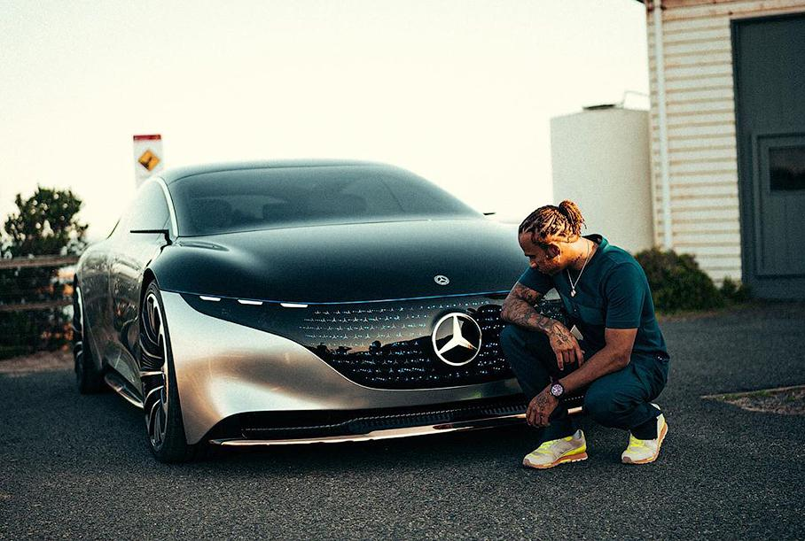

Mercedes-Benz EQS
Электрический флагман в новом Mercedes-Benc EQS эмоциональность и интеллект, роскошь и цифровые технологии, стиль, статус, комфорт и экологичность сливаются воедино.
Это первый электроседан класса люкс, лидер нового поколения автомобилей, готовый подарить своему владельцу восхитительное чувство гармонии с собой и окружающим миром.
S-класс «на батарейках»: первые впечатления от Mercedes-Benz EQS
Самый аэродинамичный кузов в мире и зарядка на половину за 15 минут! Тизерная программа закончена, и электрический аналог S-класса наконец полностью рассекречен. Mercedes-Benz EQS (код кузова — V297) — это первая серийная модель на новой модульной платформе MEA (Modular Electric Architecture), созданной специально для «электричек». Она имеет не так много общего с имеющимися «тележками», корпус тяговой батареи включен в силовую структуру кузова, к нему крепятся передний и задний подрамники. Впоследствии эта платформа ляжет в основу множества батарейных Мерседесов разных классов, но начать в компании решили с флагмана. Чтобы EQS не воспринимался «S-классом на батарейках», дизайнеры и инженеры использовали другой образ. Электрический Mercedes EQS не седан, а пятидверный лифтбек с большой крышкой багажника. Объем отсека — от 610 до 1770 литров. Колесная база максимально растянута, свесы кузова сделаны короткими, а салон сдвинут вперед. Предусмотрен только один вариант длины, который расположился как раз между коротким и длинным вариантами S-класса. По ширине и высоте электромобиль почти повторяет «эску».
- Кузов: лифтбэк
- Мощность: от 333 до 523 л.с.
- Разгон до 100 км/ч: от 4,3 до 6,2 секунды
- Разгон до 100 км/ч: от 4,3 до 6,2 секунды
- Запас хода: от 500 до 770 км
Шестикратный чемпион мира по гонкам Формулы 1 Льюис Хэмилтон одним из первых смог познакомиться с новым Mercedes-Benz Vision EQS (старший брат Mercedes-Benz EQS, оба они построинны на одной платформе) и не скрывал своего восхищения после тест-драйва. На этот раз его «автомобилем мечты» станет электрический Mercedes-Benz EQS.
У него самый аэродинамичный кузов
Несмотря на то, что Mercedes-Benz EQS претендует на звание флагмана электрической линейки Mercedes, он совершенно не похож на дебютировавший недавно S-класс в кузове W223. Этот автомобиль из-за своеобразный формы кузова и покатой крыши скорее напоминает гигантский однобъемник, нежели традиционный седан. На самом деле так и есть: EQS — это лифтбэк, а своеобразные формы обеспечивают его кузову рекордную аэродинамику. Машина обладает наилучшим коэффициентом аэродинамического сопротивления, который составляет 0,2 против 0,22 у нового S-класса. Но этот показатель достигнут не только формами, но и конструктивными решениями. Например, ручки дверей с сервоприводами при начале движения утапливаются, а колесные диски диаметром от 19 до 22 дюймов имеют оптимизированную аэродинамичную форму спиц.
У него салон из будущего
Интерьер Mercedes EQS заслуживает отдельного внимания. Конечно, салон нового S-класса уже успел нас поразить футуристичными дизайном, однако если заглянуть внутрь EQS, можно подумать, что оказался в «Энтерпрайзе» из «Звездного пути». Главное украшение интерьера — это передняя панель с новой системой MBUX Hyperscreen, которая представляет собой сплошную стеклянную поверхность шириной 141 см. Под ней расположился гипер-экран диагональю свыше 37 дюймов. Но на самом деле он не столь велик, каким кажется, и представляет собой комбинацию трех раздельных тачскринов, два из которых диагональю 12,3 дюйма расположены перед водителем и передним пассажирам, а более крупный дисплей диагональю 17,7 дюйма скомпонован на центральной консоли и отвечает за работу всего салонного оборудования.
Впрочем, доступ ко всем систем автомобиля имеет как водитель при помощи кнопок на руле, так и передний пассажир при помощи дисплея на панели. А за работу всей этой электроники отвечает восемь процессоров и 24 Гб оперативной памяти. Еще два тачскрина расположены сзади в подголовниках, напротив каждого из задних пассажиров. И здесь вновь дублируется функционал всего салонного оборудования. Именно по обустройству заднего ряда EQS напоминает новейший S-класс. Здесь очень удобные кресла, отделанные тончайший кожей, который больше напоминают удобные коконы, нежели сиденья. Плюс есть всевозможные опции комфорта вроде подогревов, вентиляции и массажа кресел. Кроме того, EQS оснащается топовой аудиосистемой Burmester c 15 динамиками мощностью 710 Ватт.
У него гигантский запас хода
Пока что гама модификаций EQS включает в себя лишь две версии. Начальное исполнение автомобиля с индексом 450+ имеет один электромотор на задней оси, который развивает максимальную мощность в 333 лошадиные силы и обладает крутящим моментов в 568 Нм. Емкость блока батарей на такой версии EQS составляет 107,8 кВт*ч. Именно в таком исполнении автомобиль массой две с половиной тонны (2480 кг) может проехать на одной зарядке до 770 км. Другая модификация электрического флагмана — это полноприводный EQS580 4MATIC с двумя электромоторами на передней и задней оси совокупной максимальной мощностью 523 лошадиные силы и пиковым моментом 855 Нм. Такая версия автомобиля весит уже 2585 кг, а запас хода составляет 500 км. При этом у обеих версий максимальная скорость ограничена на 210 км/ч, а разгон до «сотни» занимает 6,2 и 4,3 секунды соответственно. Вместе с тем, в Mercedes не исключают, что чуть позже появится еще более экстремальная версия EQS от мастеров AMG. По предварительным данным, силовая установка такой модификации будет развивать уже 761 лошадиную силу, а разгон до «сотни» у этой машины, скорее всего, окажется меньше трех секунд.
Он будет быстро заряжаться
Электросистема на борту EQS — 400-вольтовая, а максимальная мощность зарядки для устройства с постоянным током составляет 200 кВт. По этим показателям электрофлагман из Штутгарта отстает от конкурентов в лице родственных Porsche Taycan и Audi e-tron, которые имеет 800-вольтовую зарядную систему мощностью уже в 250 кВт. Однако это не мешает «Мерседесу» демонстрировать достаточно быстрое время зарядки. Всего за 15 минут при подключении к трехфазной сети с такими показателями заряд батареи может восполниться почти на 300 км запаса хода.